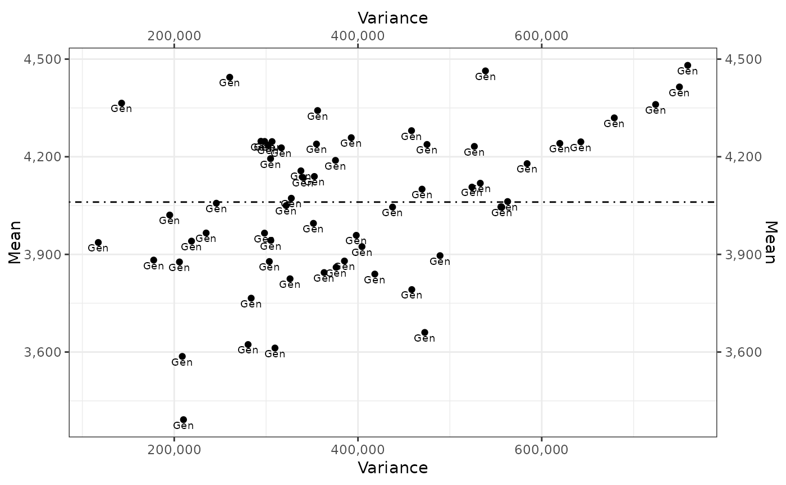

<!-- Generated by pkgdown: do not edit by hand -->
<!DOCTYPE html>
<html lang="en">
  <head>
  <meta charset="utf-8">
<meta http-equiv="X-UA-Compatible" content="IE=edge">
<meta name="viewport" content="width=device-width, initial-scale=1.0">

<title>Stability Measures for Genotypes by Environment Interaction (GEI) — stab_measures • stability</title>

<!-- jquery -->
<script src="https://code.jquery.com/jquery-3.1.0.min.js" integrity="sha384-nrOSfDHtoPMzJHjVTdCopGqIqeYETSXhZDFyniQ8ZHcVy08QesyHcnOUpMpqnmWq" crossorigin="anonymous"></script>
<!-- Bootstrap -->

<link href="https://maxcdn.bootstrapcdn.com/bootstrap/3.3.7/css/bootstrap.min.css" rel="stylesheet" integrity="sha384-BVYiiSIFeK1dGmJRAkycuHAHRg32OmUcww7on3RYdg4Va+PmSTsz/K68vbdEjh4u" crossorigin="anonymous">
<script src="https://maxcdn.bootstrapcdn.com/bootstrap/3.3.7/js/bootstrap.min.js" integrity="sha384-Tc5IQib027qvyjSMfHjOMaLkfuWVxZxUPnCJA7l2mCWNIpG9mGCD8wGNIcPD7Txa" crossorigin="anonymous"></script>

<!-- Font Awesome icons -->
<link href="https://maxcdn.bootstrapcdn.com/font-awesome/4.6.3/css/font-awesome.min.css" rel="stylesheet" integrity="sha384-T8Gy5hrqNKT+hzMclPo118YTQO6cYprQmhrYwIiQ/3axmI1hQomh7Ud2hPOy8SP1" crossorigin="anonymous">

<!-- clipboard.js -->
<script src="https://cdnjs.cloudflare.com/ajax/libs/clipboard.js/1.7.1/clipboard.min.js" integrity="sha384-cV+rhyOuRHc9Ub/91rihWcGmMmCXDeksTtCihMupQHSsi8GIIRDG0ThDc3HGQFJ3" crossorigin="anonymous"></script>

<!-- sticky kit -->
<script src="https://cdnjs.cloudflare.com/ajax/libs/sticky-kit/1.1.3/sticky-kit.min.js" integrity="sha256-c4Rlo1ZozqTPE2RLuvbusY3+SU1pQaJC0TjuhygMipw=" crossorigin="anonymous"></script>

<!-- pkgdown -->
<link href="../pkgdown.css" rel="stylesheet">
<script src="../pkgdown.js"></script>


<meta property="og:title" content="Stability Measures for Genotypes by Environment Interaction (GEI) — stab_measures" />

<meta property="og:description" content="Stability Measures for Genotypes by Environment Interaction (GEI)" />
<meta name="twitter:card" content="summary" />


<!-- mathjax -->
<script src='https://mathjax.rstudio.com/latest/MathJax.js?config=TeX-AMS-MML_HTMLorMML'></script>

<!--[if lt IE 9]>
<script src="https://oss.maxcdn.com/html5shiv/3.7.3/html5shiv.min.js"></script>
<script src="https://oss.maxcdn.com/respond/1.4.2/respond.min.js"></script>
<![endif]-->


  </head>

  <body>
    <div class="container template-reference-topic">
      <header>
      <div class="navbar navbar-default navbar-fixed-top" role="navigation">
  <div class="container">
    <div class="navbar-header">
      <button type="button" class="navbar-toggle collapsed" data-toggle="collapse" data-target="#navbar" aria-expanded="false">
        <span class="sr-only">Toggle navigation</span>
        <span class="icon-bar"></span>
        <span class="icon-bar"></span>
        <span class="icon-bar"></span>
      </button>
      <span class="navbar-brand">
        <a class="navbar-link" href="../index.html">stability</a>
        <span class="label label-default" data-toggle="tooltip" data-placement="bottom" title="Released version">0.5.0</span>
      </span>
    </div>

    <div id="navbar" class="navbar-collapse collapse">
      <ul class="nav navbar-nav">
        <li>
  <a href="../index.html">
    <span class="fa fa-home fa-lg"></span>
     
  </a>
</li>
<li>
  <a href="../reference/index.html">Reference</a>
</li>
<li>
  <a href="../news/index.html">Changelog</a>
</li>
      </ul>
      
      <ul class="nav navbar-nav navbar-right">
        
      </ul>
      
    </div><!--/.nav-collapse -->
  </div><!--/.container -->
</div><!--/.navbar -->

      
      </header>

<div class="row">
  <div class="col-md-9 contents">
    <div class="page-header">
    <h1>Stability Measures for Genotypes by Environment Interaction (GEI)</h1>
    
    <div class="hidden name"><code>stab_measures.Rd</code></div>
    </div>

    <div class="ref-description">
    
    <p>Stability Measures for Genotypes by Environment Interaction (GEI)</p>
    
    </div>

    <pre class="usage"><span class='fu'>stab_measures</span>(<span class='no'>.data</span>, <span class='no'>.y</span>, <span class='no'>.gen</span>, <span class='no'>.env</span>)

<span class='co'># S3 method for default</span>
<span class='fu'>stab_measures</span>(<span class='no'>.data</span>, <span class='no'>.y</span>, <span class='no'>.gen</span>, <span class='no'>.env</span>)</pre>
    
    <h2 class="hasAnchor" id="arguments"><a class="anchor" href="#arguments"></a>Arguments</h2>
    <table class="ref-arguments">
    <colgroup><col class="name" /><col class="desc" /></colgroup>
    <tr>
      <th>.data</th>
      <td><p>data.frame</p></td>
    </tr>
    <tr>
      <th>.y</th>
      <td><p>Response Variable</p></td>
    </tr>
    <tr>
      <th>.gen</th>
      <td><p>Genotypes Factor</p></td>
    </tr>
    <tr>
      <th>.env</th>
      <td><p>Environment Factor</p></td>
    </tr>
    </table>
    
    <h2 class="hasAnchor" id="value"><a class="anchor" href="#value"></a>Value</h2>

    <p>Stability Measures</p>
    
    <h2 class="hasAnchor" id="references"><a class="anchor" href="#references"></a>References</h2>

    <p>Singh, R. K. and Chaudhary, B. D. (2004) <em>Biometrical Methods in Quantitative Genetic Analysis</em>.
             New Delhi: Kalyani.</p>
    

    <h2 class="hasAnchor" id="examples"><a class="anchor" href="#examples"></a>Examples</h2>
    <pre class="examples"><div class='input'>
<span class='fu'>data</span>(<span class='no'>ge_data</span>)
<span class='no'>Yield.StabMeasures</span> <span class='kw'>&lt;-</span> <span class='fu'>stab_measures</span>(
                <span class='kw'>.data</span>  <span class='kw'>=</span> <span class='no'>ge_data</span>
               , <span class='kw'>.y</span>    <span class='kw'>=</span> <span class='no'>Yield</span>
               , <span class='kw'>.gen</span>  <span class='kw'>=</span> <span class='no'>Gen</span>
               , <span class='kw'>.env</span>  <span class='kw'>=</span> <span class='no'>Env</span>
               )
<span class='no'>Yield.StabMeasures</span></div><div class='output co'>#&gt; $StabMeasures
#&gt; # A tibble: 60 x 7
#&gt;    Gen       Mean    GenSS     Var    CV     Ecov ShuklaVar
#&gt;    &lt;fct&gt;    &lt;dbl&gt;    &lt;dbl&gt;   &lt;dbl&gt; &lt;dbl&gt;    &lt;dbl&gt;     &lt;dbl&gt;
#&gt;  1 013BT034 4248. 2943754. 294375.  12.8  946707.    94993.
#&gt;  2 122557   4062. 5628712. 562871.  18.5 1159570.   117014.
#&gt;  3 122559   4259. 3926773. 392677.  14.7 1800281.   183294.
#&gt;  4 12B.2511 4414. 7498766. 749877.  19.6 2494884.   255150.
#&gt;  5 12FJ26   4057. 2458450. 245845.  12.2 1567279.   159191.
#&gt;  6 14B.1030 3995. 3515214. 351521.  14.8 1336998.   135368.
#&gt;  7 14C036   3943. 3051351. 305135.  14.0 2547232.   260565.
#&gt;  8 14C040   3825. 3260477. 326048.  14.9 1463435.   148448.
#&gt;  9 9496     4072. 3274386. 327439.  14.1  991210.    99597.
#&gt; 10 AUR0809  3792. 4585671. 458567.  17.9 1234667.   124782.
#&gt; # ... with 50 more rows
#&gt; 
#&gt; $MeanVarPlot</div><div class='img'></div><div class='output co'>#&gt; 
#&gt; $MeanEcovPlot</div><div class='img'></div><div class='output co'>#&gt; 
#&gt; $MeanShuklaVarPlot</div><div class='img'></div><div class='output co'>#&gt; </div><div class='input'>


</div></pre>
  </div>
  <div class="col-md-3 hidden-xs hidden-sm" id="sidebar">
    <h2>Contents</h2>
    <ul class="nav nav-pills nav-stacked">
      <li><a href="#arguments">Arguments</a></li>
      
      <li><a href="#value">Value</a></li>

      <li><a href="#references">References</a></li>
      
      <li><a href="#examples">Examples</a></li>
    </ul>

    <h2>Author</h2>
    
<ol>
<li><p>Muhammad Yaseen (<a href='mailto:myaseen208@gmail.com'>myaseen208@gmail.com</a>)</p></li>
<li><p>Kent M. Edkridge (<a href='mailto:keskridge1@unl.edu'>keskridge1@unl.edu</a>)</p></li>
</ol>

  </div>
</div>

      <footer>
      <div class="copyright">
  <p>Developed by Muhammad Yaseen, Kent M. Eskridge, Ghulam Murtaza.</p>
</div>

<div class="pkgdown">
  <p>Site built with <a href="http://pkgdown.r-lib.org/">pkgdown</a>.</p>
</div>

      </footer>
   </div>

  

  </body>
</html>

